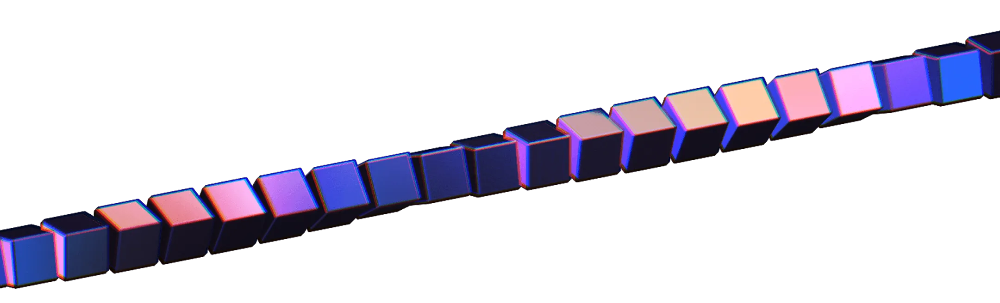
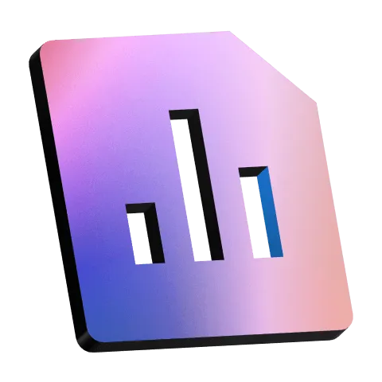
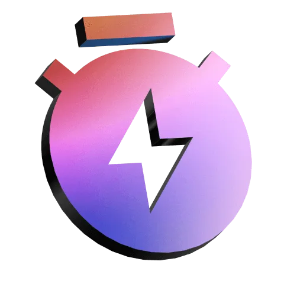
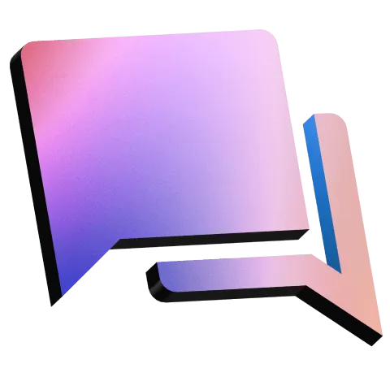
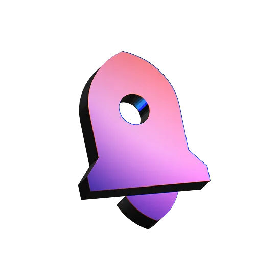
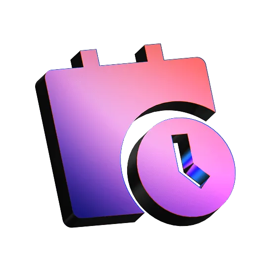
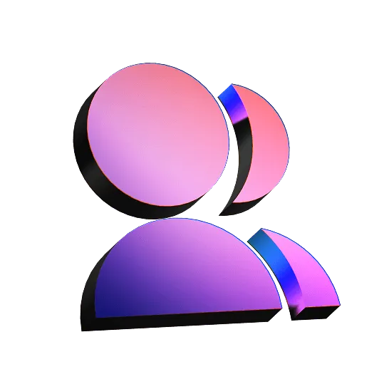

From Design to Development Complete Digital Solutions to Elevate Your Product

Your product deserves to shine in the digital space. At our agency, we blend creativity with cutting-edge solutions to help you thrive and lead in the digital world
Our process turns vision into results. With clear planning and transparent communication, we manage every step to deliver exactly what your product needs to succeed
[01]

Product Requirements
We start every project by gathering and clarifying your product requirements. This ensures we build exactly what you need
[02]

2-Week Sprint
Our development runs in focused 2-week sprints. Each sprint starts with planning and ends with a demo — so you see real progress, fast
[03]
Weekly Reports
We keep you in the loop with clear, concise weekly updates. You'll always know what’s been done, what’s in progress, and what’s coming next
[04]

Communication
We stay connected through regular check-ins and instant messaging. You’ll always have a direct line to our team — no long waits, no guesswork
xmethod In the numbers

MVP launched
60+

Months to launch an MVP
2-3

People in the team
30+
Minimum project price
Rs 15000
We simplify the complex. No-code and low-code tools. High-end design. Scalable digital experiences that deliver results — in the numbers